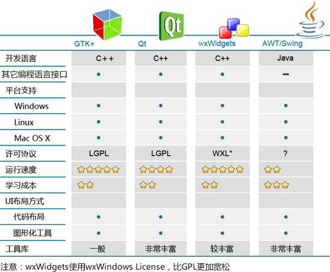

Qt和其它GUI库的对比
世界上的 GUI 库多如牛毛，有的跨平台，有的专属于某个操作系统；有的只有 UI 功能，有的还融合了网络通信、多媒体处理、数据库访问等底层功能。
没有哪一种方案能够独霸 Windows，使用比较多的编程语言是 C++、C#、Java。
用 Qt 来开发 Windows 桌面程序有以下优点：
另外，Qt 已经封装了底层细节，学习 Qt 将会非常简单；而 MFC 只是给 Windows API 加了一层包装，不了解 Windows API 也学不好 MFC，大家普遍反映 MFC 难学。
我们不能简单地说 Qt 好还是 MFC 好，两者都有用武之地；但是初学者学习 Qt 会比较简单，不用应付那些烦人的 Windows API，很快就能开发出带有漂亮界面的应用程序。
Windows 下的 GUI 库
Windows 下的 GUI 解决方案比较多：- 基于 C++ 的有 Qt、MFC、WTL、wxWidgets、DirectUI、Htmlayout；
- 基于 C# 的有 WinForm、WPF；
- 基于 Java 的有 AWT、Swing；
- 基于 Pascal 的 有Delphi；
- 基于Go语言的有 walk 和 electron；
- 还有国内初露头角的 aardio；
- Visual Basic 曾经很流行，现在逐渐失去了色彩；
- 如果你有 Web 开发经验，也可以基于 Webkit 或 Chromium 将网页转换为桌面程序。
没有哪一种方案能够独霸 Windows，使用比较多的编程语言是 C++、C#、Java。
用 Qt 来开发 Windows 桌面程序有以下优点：
- 简单易学：Qt 封装的很好，几行代码就可以开发出一个简单的客户端，不需要了解 Windows API。
- 资料丰富：资料丰富能够成倍降低学习成本，否则你只能去看源码，关于 DirectUI、Htmlayout、aardio 的资料就很少。
- 漂亮的界面：Qt 很容易做出漂亮的界面和炫酷的动画，而 MFC、WTL、wxWidgets 比较麻烦。
- 独立安装：Qt 程序最终会编译为本地代码，不需要其他库的支撑，而 Java 要安装虚拟机，C# 要安装 .NET Framework。
- 跨平台：如果你的程序需要运行在多个平台下，同时又希望降低开发成本，Qt 几乎是必备的。
Qt 和 MFC
读者经常将 MFC 和 Qt 进行对比，MFC 只能应用在 Windows 平台，而 Qt 是跨平台的，一次编写，到处运行。另外，Qt 已经封装了底层细节，学习 Qt 将会非常简单；而 MFC 只是给 Windows API 加了一层包装，不了解 Windows API 也学不好 MFC，大家普遍反映 MFC 难学。
我们不能简单地说 Qt 好还是 MFC 好，两者都有用武之地；但是初学者学习 Qt 会比较简单，不用应付那些烦人的 Windows API，很快就能开发出带有漂亮界面的应用程序。
Linux 下的 GUI 库
Linux 下常用的 GUI 库有基于 C++ 的 Qt、GTK+、wxWidgets，以及基于 Java 的 AWT 和 Swing。其中最著名的就是 Qt 和 GTK+：KDE 桌面系统已经将 Qt 作为默认的 GUI 库，Gnome 桌面系统也将 GTK+ 作为默认的 GUI 库。有兴趣的读者请猛击《Linux桌面系统》了解更多关于 KDE 和 Gnome 的内容。相比 GTK+，Qt 的功能更加强大，更新也很快，比较受人们追捧。

图1：Linux 下各种 GUI 库对比图
图1：Linux 下各种 GUI 库对比图
关注公众号「站长严长生」，在手机上阅读所有教程，随时随地都能学习。内含一款搜索神器，免费下载全网书籍和视频。

微信扫码关注公众号